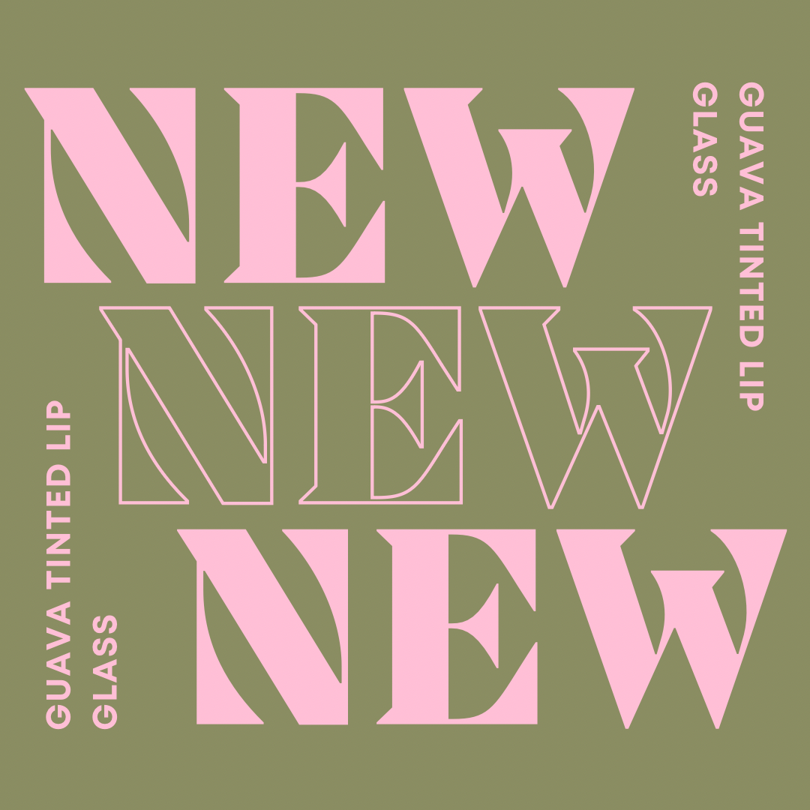

BEAUTIFUL SKIN REQUIRES COMMITMENT. NOT A MIRACLE.
Sincère(ly) Made For You
OUR PRODUCTS
Stay fresh with the dragon fruit shade that is rich with vitamin B3, has ultraviolet (UV) radiation protection giving a brightening glow as well as moisturizes and nourishes dull skin.
This dewy looking beetroot shade is rich with vitamin C, has anti-aging properties and even prevents acne breakouts.

Guava Tinted Lip Glass adjust the color according to the pH of the your lips while making your lip healthier. Guava Tinted Lip Glass contains red guava fruit extract which can regulate natural oil so your lip do not become dry or too oily, easily absorb on your lip.